See: If you get far enough in
You can see… Karma
You can see patterns unfolding
(of which this life is only a part, part of a mosaic)
But: in order to do that
You have to have left
The gravitational field
Of
Time and space
You can't think in… time & space
You can't be in… your thoughts
Any more!
Because your thoughts are still in time
& space & you can't get out of time
Through them.
You've got to be outside
That.
you've got to be in the place where
You see your own
And: not only that one but that one & …
That one & that too…